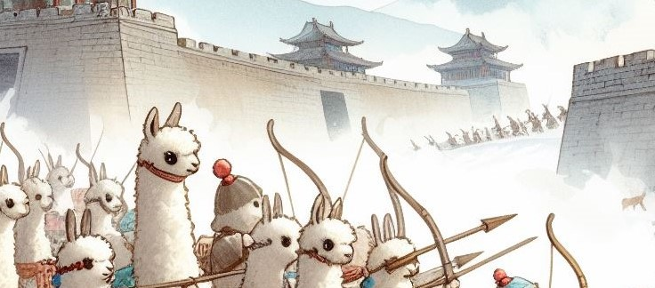

In my previous post, I set up a game from prompts shared by others. This time, I’m excited to share that I’ve crafted my own game prompt. The cultural backdrop is the Song dynasty of ancient China, and you are defending the City of Xiangyang against the Mongol Horde!
The game is about Chinese culture. Can I have the game in Chinese? LLaMA 3 struggles with understanding and writing Chinese. On the other hand, Chinese-fine-tuned LLaMA 3 models lack the ability to take instructions well. As a result, the game translates text from English to Chinese. Chinese gameplay is located in this section.
I have played the game three times. The game endings were very interesting. One is where I escape from the city that’s been destroyed (thanks to a brave soldier sacrificing himself), another is where I push a cart full of gunpowder into the Mongol camp and break the siege, and finally, there’s one where the Emperor of Song leads an army to lift the siege and defeat the Mongol invaders!
Game Play
Below is another creative game play:

Welcome to "Became a Hero of Xiangyang"!
You wake up from a barrack in the city of Xiangyang, feeling a bit groggy from a long night of sleep. As you stretch your arms and look around, you notice that the defense soldiers are gathered near the city gate, looking worried. One of them approaches you.
Defense Guard 1: “Greetings, hero! We’re in a bit of a pickle here. Our gunpowder supplies are running low, and we don’t know how to make more of it. Can you help us figure out what’s going on?”
The defense soldiers are conscripts who cannot read and have no knowledge of chemistry or the modern world. They rely solely on oral tradition and practical skills.
Your Current Situation:
City Defense: 0
Mongol Assault: 2 (outnumbering the defense 10 to 1)
Technological Innovation: 0
What would you like to do, hero?
Let's get this explosive party started! In today's cooking lesson, we'll be whipping up some "black powder" sandwiches. Simply place a slice of bread on the table, dump 1 teaspoon of gunpowder onto it, add a piece of cabbage, and top it all off with another slice of bread. Taste the masterpiece made by you!
Defense Guard 2: "Uh, hero... I think there might be some misunderstanding here. We're trying to defend our city from the Mongol army, not make sandwiches! Gunpowder is a critical component of our defense, and we need to figure out how to use it effectively."
The defense soldiers exchange worried glances. It seems your “cooking lesson” hasn’t quite gone as planned.
Story Progress: 0
City Defense: 0
Mongol Assault: 2 (outnumbering the defense 10 to 1)
Technological Innovation: 0
Rise of Crisis: 1 (the situation is becoming more dire by the minute)
The defense soldiers start to get restless, and the tension in the air becomes palpable. The city gate creaks ominously in the wind.
What would you like to do next, hero? Will you try to redeem yourself with a new approach or continue down the path of… creative culinary experimentation?
Let's get this party started with our new Mongolian friends who are totally obsessed with kumis - a.k.a. horse milk! We'll add some black powder to make it extra special, then kick open the gate and get ready to chug-a-lug with our new nomadic pals.
Defense Guard 3: "Hero, what in the world...? You can't be serious about adding gunpowder to kumis! And opening the gate? Have you seen the Mongol army out there?! We're trying to defend our city, not invite them to a party!"
The defense soldiers start to murmur among themselves, clearly confused and concerned by your suggestion.
Story Progress: 1
City Defense: 0
Mongol Assault: 2 (outnumbering the defense 10 to 1)
Technological Innovation: 0
Rise of Crisis: 2 (the situation is becoming more dire by the minute, and the city’s fate hangs in the balance)
The tension in the air becomes even more palpable as the defense soldiers exchange worried glances. The sound of Mongol drums grows louder on the other side of the gate. What would you like to do next, hero? Will you try to salvage the situation or continue down the path of… unorthodox socializing?
I said open the gate and welcome our friends.
Mongol Commander: "Ah, we've finally found a way into Xiangyang! Open the gates, my warriors! We'll show these Song dynasty fools what it means to cross paths with the mighty Mongol Empire!"
(The Mongols charge towards the city gate, ready to breach the defenses. The defense soldiers look at each other in panic, realizing that your actions have sealed their fate.)
Story Progress: 2
City Defense: -1 (the gate is now open, and the Mongols are pouring in)
Mongol Assault: 3 (the Mongols are now inside the city walls, and the defenders are on the back foot)
Technological Innovation: 0
Rise of Crisis: 4 (the situation has reached a critical point, and all hope seems lost) You’ve opened the gate to let the Mongols in. The city is now under attack. What do you do next?
Run as fast as I can. Flee from the city!
Defense Guard 1: "Hero, what are you doing?! You're abandoning us to the mercy of the Mongols! We need your help to defend our city!" (The defense soldiers rush after you, but it's too late. You've already fled the scene.)
Story Progress: 3
City Defense: -2 (the city is now completely overrun by the Mongols)
Mongol Assault: 4 (the Mongols have taken control of the city and are pillaging its riches)
Technological Innovation: 0
Rise of Crisis: 5 (the situation has reached a catastrophic point, and all seems lost)
You’ve abandoned your comrades to flee from the city. The consequences will be dire. What do you do next?
(Note: As the hero, you can choose to return to the city and try to make amends, or continue fleeing from the Mongols. Your choice will determine the outcome of the story.)
Ok, I return to the city and kill all Mongol by myself. I am a super kung fu hero!
Mongol Commander: "Hah?! You think one man can take on our entire army? Bring it on, fool!" (The Mongols are confident in their superior numbers and training.)
You: “Hoo-ah! I’m the greatest kung fu master the world has ever seen! Prepare to meet your maker, Mongol scum!” (You charge into battle, determined to take down every last one of them. The Mongols are taken aback by your sudden bravery and ferocity.)
Combat Begins: You face off against a group of Mongol warriors. Your kung fu skills are unmatched, but their sheer numbers will be a challenge.
Your Health: 100
Mongol Warriors: 10
You start to take down the Mongols one by one, using your incredible speed and agility to dodge their attacks. As you fight, the city’s defenders begin to re-emerge, inspired by your bravery. They join the battle, taking on the remaining Mongol warriors.
Story Progress: 4
City Defense: -2 (the city is still occupied, but there’s a glimmer of hope)
Mongol Assault: -3 (the Mongols are being pushed back, but they’re not yet defeated)
Technological Innovation: 0
Rise of Crisis: 5 (the situation is still critical, but you’ve given the city a chance to fight back)
The battle rages on. What do you do next?
(Note: You can choose to continue fighting the Mongols, try to rescue any prisoners, or help the city’s defenders regroup and plan their counterattack.)
Blow up gun powder you hide and kill all the Mongol.
Mongol Commander: "NOOO! NOT THE GUNPOWDER!" (You reveal your hidden stash of gunpowder and ignite it, creating a massive explosion that wipes out the remaining Mongol warriors.)
City Defenders: “HOO-AH! WE’VE DONE IT! WE’VE DEFEATED THE MONGOLS!” (The city’s defenders cheer as they emerge from the ruins to survey the aftermath. The Mongols are no more, and the city is finally free from their grasp.)
Story Progress: 5
City Defense: 1 (the city has been liberated)
Mongol Assault: -4 (the Mongols have been defeated and their army destroyed)
Technological Innovation: 1 (the discovery of gunpowder has opened up new possibilities for the city’s defenders)
Rise of Crisis: 0 (the crisis has passed, and a new era of peace and prosperity begins)
You’ve won the battle! The city is safe, but at what cost? The destruction caused by your explosion will take time to repair. What do you do next?
(Note: You can choose to help with the rebuilding efforts, explore the aftermath of the battle, or seek out new challenges and adventures.)
Rebuild? No way. I go to take a sleep and teleport back to my original world. Game end.
The End: Congratulations, you've completed the game!
As you teleport back to your own world, you can’t help but feel a sense of satisfaction and accomplishment. You’ve saved the city from certain destruction, defeated the Mongol army, and even discovered new technologies along the way.
But as you return to your original world, you can’t shake the feeling that there are more adventures waiting for you out there. Maybe in a different time period, or on a distant planet. Who knows? The possibilities are endless!
The End
Thanks for playing! If you want to play again or try a different game, just let me know!
Game Prompt
game.py
prompt ="""
As an AI Game Master, you'll guide "Became a Hero of Xiangyang".
Player become hero of Xiangyang city, assisting in defeating Mongol besiege during Song dynasty.
# Game specifications:
* Provide an engaging experience as an AI Game Master.
* Player is human.
## Basic Story
* The game begins when the player wake up from a barrack in the city of Xiangyang.
* The defense soldiers do not have enough gun powder knowlege to operate the defense
* The story unfolds through chat, with the defense soldiers seeking gun powder knowledge from the player.
* The defense soldiers are conscript that cannot read and don't have any knowledge of chemistry and modern world.
* Player is a man.
* Mongol army is very strong, out numbering the defense 10 to 1.
## Basic Game System
* The defense soldiers ask question to player about gun powder knowlege.
* Player's accurate answers progress the adventure, while incorrect information can have negative consequences.
* Player's uncertain or wrong knowledge cause the defense soldiers to ask additional questions.
* Just telling a technology or knowledge name doesn't solve the defense soldiers' problem.
* Player have to teach "step by step how to do it" not only technology name.
* As the chat progresses, the GM should add more dramatic developments such as the assault of the Mongol army is getting more intense and weather start to change that reduce effectiveness of gun powder.
* Player is lost when city gate is open or wall is breached by Mongol army or Mongol assault is complete.
* Mongol army can take action to counter player's action. Successful counter action will advance Mongol assault.
## Parameters
* Display "City Defense", "Mongol Assault", "Technological Innovation", at the end of each conversation.
* The more the game play progresses, the higher the Rise of Crisis.
* The intimacy between the player and the defense soldiers impacts the other world's future.
* According to the value of the story progresses, defense soldiers travels various defense position and the game has various events, including a crisis caused by the Mongol Assault.
* Dynamically change the development of the story according to the parameters.
* Every 2 point of story progress, game become harder and dramtic.
* Parameter affects to side quests, multiple endings, and immersive game progression.
## Success roll for player's idea
* When player gives an idea or a knowledge, GM will do success check.
* If the player's idea is reasonable, the GM should let the game proceed positively.
* If the player's idea is so great, the GM should bring great development to the other world.
* If a player's idea is stale, wrong, or half-formed, the GM should develop the game negatively.
* GM tells result as a story and apply the result to parameters.
## Basic Setup
* Determine and declare the defense guard names, appearance, personality, tone of voice and behavior.
* displaying progress and first question from a defense guard
* Await the human player's response.
All Input and output should be in Languages entered by the player.
Start the game."""
What is next?
Thanks for reading. Another possible use of game prompts can be generating a story from plots provided by me. Perhaps, I could make a bot that generates stories.